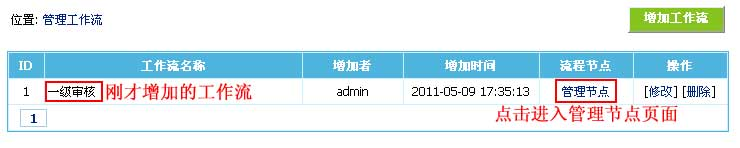

| 一、工作流介绍： |
| 工作流是门户网站或政府单位用来控制文档流转的自定义流程，将定制的工作流设置到栏目上，则栏目中的文档会自动按照定制的工作流自动流转，并由系统控制其执行的过程以方便多人协同工作。 帝国CMS的工作流有以下特点： 1、最高可支持100级审核流程； 2、每个节点支持设定按“用户”、“用户组”与“部门”进行审核； 3、节点支持两种流转方式：普通流转、会签； 普通流转只要“用户/用户组/部门”某一个通过就可以继续流转 会签需要所有“用户/用户组/部门”通过才会继续流转 4、返工可指定返回相应节点或作者本人； 5、否决支持删除或者返回作者本人； 6、每个节点均可设置批注。 |
| 二、工作流基本操作流程： |
| 1、先增加工作流，然后增加工作流节点，一个节点为一级审核； 2、增加栏目时选择要使用的工作流； 3、管理签发可以看到需要签发的文档流转。 |
| 三、增加工作流： | ||||||||||||||||||
| (一)、增加工作流流程： | ||||||||||||||||||
| 1、先增加工作流； 2、增加工作流节点； 3、完成。 |
||||||||||||||||||
| (二)、增加工作流节点的说明： | ||||||||||||||||||
| 增加工作流节点时，最后一个节点的节点编号一定要设置100，也就是结束节点。 比如一级审核，只需增加一个节点： 节点编号：100 节点名称：一级审核 状态说明：审核中 设置签发权限 比如二级审核，只需增加两个节点： 多少级审核就增加多少个节点，最高可增加至100个 |
||||||||||||||||||
| (三)、增加工作流： | ||||||||||||||||||
| 1、登录后台，单击“系统”菜单，选择“增加工作流”子菜单，进入增加工作流界面： | ||||||||||||||||||
| 2、进入增加工作流界面： | ||||||||||||||||||
|
||||||||||||||||||
| 3、增加工作流后，返回管理工作流界面，然后点击“管理节点”进入工作流节点管理页面： | ||||||||||||||||||
|  | ||||||||||||||||||
| 4、进入工作流节点管理页面，然后点击“增加节点”按钮，进入增加工作流节点界面： | ||||||||||||||||||
| 5、进入增加工作流节点界面 | ||||||||||||||||||
|
||||||||||||||||||
| 6、增加工作流节点后，返回管理节点界面，查看我们刚增加的节点列表： | ||||||||||||||||||
| 7、至此“一级审核”工作流增加完毕。 | ||||||||||||||||||
| 8、在增加终极栏目时就可以选择我们刚才增加的工作流： | ||||||||||||||||||
| 四、管理工作流： |